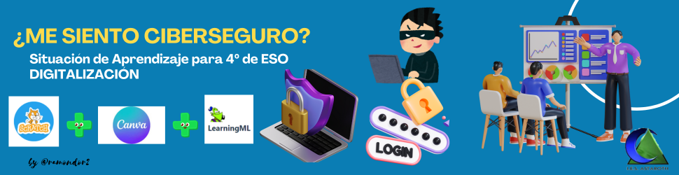

¿ME SIENTO CIBERSEGURO? DIG 4º ESO
¿ME SIENTO CIBERSEGURO?
Nos situamos
Hola hola!
Durante el desarrollo de esta situación de aprendizaje abordaremos los problemas que nos podemos encontrar mientras navegamos por Internet y cómo podemos solucionarlos.
Deberemos informarnos muy bien para poder aconsejar a nuestros compis de cursos inferiores. Para ello, realizaremos varios retos:
- Comenzaremos por crear una sencilla presentación con Scratch. Esto nos servirá además para recordar los bloques de programación que ya hemos usado en cursos anteriores, sobre todo, en la materia de Computación y Robótica o en Tecnología y Digitalización.
- Después diseñaremos con Canva un cartel para nuestra campaña de sensibilización hacia este tema.
- Y por último, crearemos un asistente virtual que sea capaz de contestar por nosotros a las preguntas que quiera hacer el usuario. Usaremos para ello la IA y, de nuevo, Scratch.
¡Comenzamos la aventura!
Objetivos de Aprendizaje
- Mejorar el comportamiento de nuestro alumnado en redes ofreciéndole herramientas útiles para su navegación segura.
- Iniciación a la IA mediante la creación de modelos sencillos.
- Recordar conceptos sencillos sobre programación por bloques.
Obra publicada con Licencia Creative Commons Reconocimiento Compartir igual 4.0